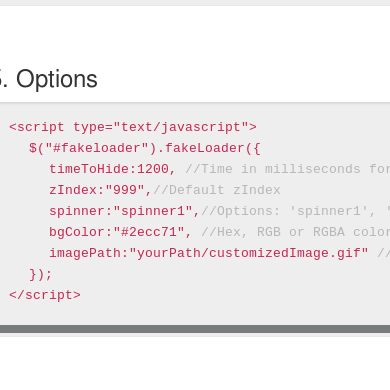
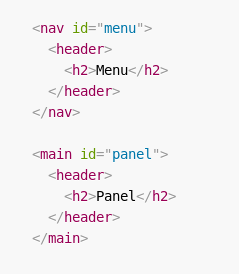
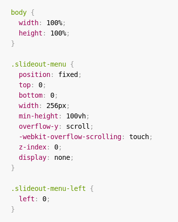
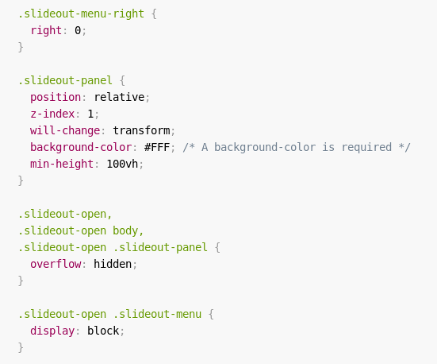
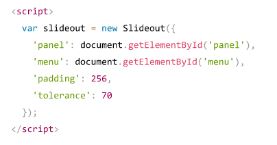

- Francisco Túlio
- Giselle Kelvien
- Jessica Costa
- Keisy Barbosa
- Leonardo Félix
- Lucas Wendel
- Yasmim Rocha
Plugins
- Photobox
- SlideOut
- SweetModal
- ScrollUp
- Fakeloader
- Parallax
Zurb Foundation - Zurb
JavaScript no foundation
Plugins
Eventos
Photobox - vsync
Fakeloader - João Pereira
opções
SweetModal - Benjamin Schmidt(Adepto.as)
Doce, fácil e poderoso.
$.sweetModal("Olá Mundo");
Duvidas?
ScrollUp - Mark Goodyear
ScrollUp é um plugin jQuery leve para criar um recurso personalizável "Scroll to top" que funcionará com qualquer site, com facilidade.
Como usar
Basta incluir o jquery.scrollUp.min.js arquivo e colocar o seguinte no cabeçalho do documento (verifique se o jQuery está incluído).Configuração mínima
$(function(){
$.scrollUp();
});
Totalmente personalizável
O ScrollUp é totalmente personalizável através de CSS, o que facilita a adaptação ao seu projeto. Basta segmentar o ID gerado pelo scrollUp no seu arquivo CSS e definir seus estilos.
#scrollUp{
bottom: 20px;
right: 20px;
padding: 10px 20px;
background: #555;
color: #fff;
}
SlideOut - Mango
Slideout é um plugin para criar um menu que funcionará com um deslize na tela (slide), foi feito pensando principalmente em dispositivos mobile sendo leve e fácil de customizar.
Como usar
1. Você precisa ter um menu (#menu) e um conteúdo principal (#panel) no body.
2. Coloque o css(index.css)
 
3. Logo após é só adicionar <script src="dist/slideout.min.js"></script> e criar uma nova instância com as opções.
Parallax - PixelCog Inc
Parallax.js é um efeitos simples de rolagem de paralaxe inspirado no Spotify.com e implementado como um plugin JQuery
Acesse: cinehero.rf.gd
Referências Bibliográficas:
- Foundation: https://foundation.zurb.com/sites/docs/index.html
- Photobox: https://github.com/yairEO/photobox
- Parallax: http://pixelcog.github.io/parallax.js/
- Fakeloader: http://joaopereirawd.github.io/fakeLoader.js/
- SlideOut: https://slideout.js.org/
- ScrollUp: https://markgoodyear.com/2013/01/scrollup-jquery-plugin/
- SweetModal: https://sweet-modal.adepto.as/